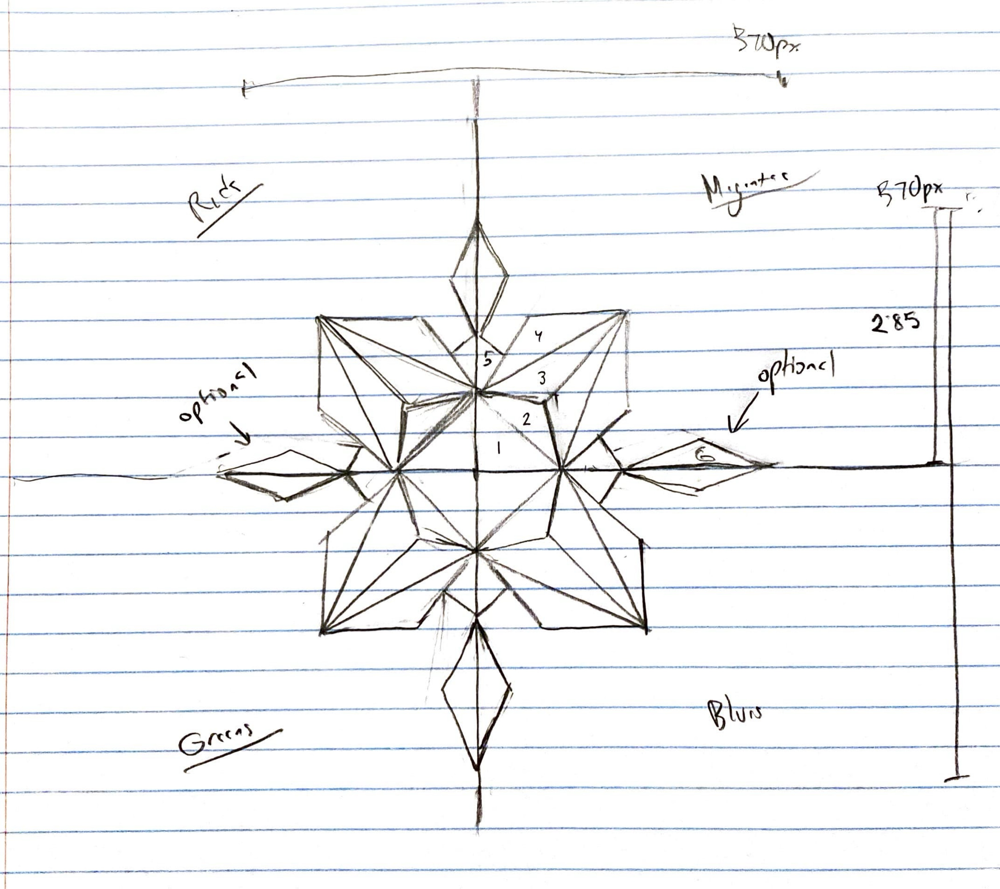

Dominic Cabrera
docabrer@ucsc.edu
Notes to Grader: Personally stylized webpage motivated by minimalism in both shape and color, executed by CSS. Other details of note: a uniquely shaped cursor whose color value matches the RGB slider values and a button to delete the most recent paint stroke. Press "Draw Example Picture" for randomized color outputs.
numdot: 0 ms: 0 fps: 0
Shape Size [5px - 40px]:
Shape Color [R,G,B]:
Segment Count [Circles]:
